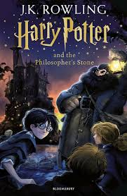

Избери ја најдобрата фикција!
-

Хари Потер и Каменот на мудроста
Џ.К.Роулинг
Рејтинг: 8★
Ова е првата книга од серијалот на Џ. К. Роулинг (J.K. Rowling). Хари Потер е единаесетгодишно сироче кое открива дека е волшебник и дека е поканет да студира во училиштето за магија Хогвортс. Таму, заедно со своите пријатели Рон и Хермиона, открива тајни за своето минато, за моќниот Темен волшебник Лорд Волдеморт и за мистериозниот Камен на мудроста.
-
Хари Потер и Одајата на тајните
Џ.К.Роулинг
Рејтинг: 9★
Во втората книга, Хари се враќа во Хогвортс и открива дека училиштето е под закана од мистериозни напади врз учениците. Се зборува за Одајата на тајните, која наводно ја отворил наследникот на Слизерин. Со помош на Рон и Хермиона, Хари истражува што навистина се случува и се соочува со нови опасности, вклучувајќи го и древното чудовиште кое демнее во училиштето.
-
Игрите на гладните
Сузан Колинс
Рејтинг: 8★
Ова е првата книга од серијалот на Сузан Колинс (Suzanne Collins). Во постапокалиптичен свет, Панем е држава поделена на 12 окрузи, каде секоја година двајца млади од секој округ се избираат за да учествуваат во смртоносните Игри на гладните. Кетнис Евердин, храбра девојка од Округ 12, се пријавува доброволно за да ја спаси својата помала сестра. Во арената, таа мора да се бори за својот живот, додека ја открива суровоста на власта и сопствената сила да се спротивстави.
-
Раѓање на огнот
Сузан Колинср
Рејтинг: 8★
Во вториот дел од трилогијата, Кетнис и Пита Меларк, победници на Игрите на гладните, стануваат симбол на отпорот против Капитол. Нивната победа инспирира бунт низ Панем, а претседателот Сноу им се заканува со страшни последици. Но, новите 75-ти Игри носат уште поголема опасност – минатите победници се враќаат во арената, принудени повторно да се борат, додека бунтот расте и надежта за револуција станува сè појасна.
Овој серијал е исполнет со акција, драма и политички интриги, прикажувајќи ја борбата за слобода и преживување.
-

Откриј ме
Тахерех МАФИ
Рејтинг: 9★
Ова е првата книга од серијалот на Тахерех МАФИ (Tahereh Mafi). Приказната ја следи Џулиет Ферс, девојка со смртоносен допир – секој што ќе ја допре умира. Поради тоа, таа е затворена во изолирана ќелија, додека светот околу неа е во хаос, контролиран од репресивниот режим на Обновата. Но, кога Адам, нејзината прва љубов, се појавува во нејзиниот живот, Џулиет сфаќа дека можеби има моќ не само да уништува, туку и да ја промени иднината.
-

Уништи ме
Тахерех МАФИ
Рејтинг: 9★
Во вториот дел, Џулиет се приклучува на Отпорот, место каде што конечно се чувствува безбедно и прифатено. Но, иако е решена да се бори против Обновата, нејзините чувства кон Адам се комплицираат, а Варнер, мистериозниот и опасен водач на непријателот, ја збунува уште повеќе. Додека нејзината сила расте, таа мора да научи како да ја контролира и да донесе одлуки кои ќе го променат текот на војната.
Серијалот „Уништи ме“ е исполнет со романса, акција и психолошка борба, прикажувајќи ја трансформацијата на една хероина која учи да ја прифати својата моќ.